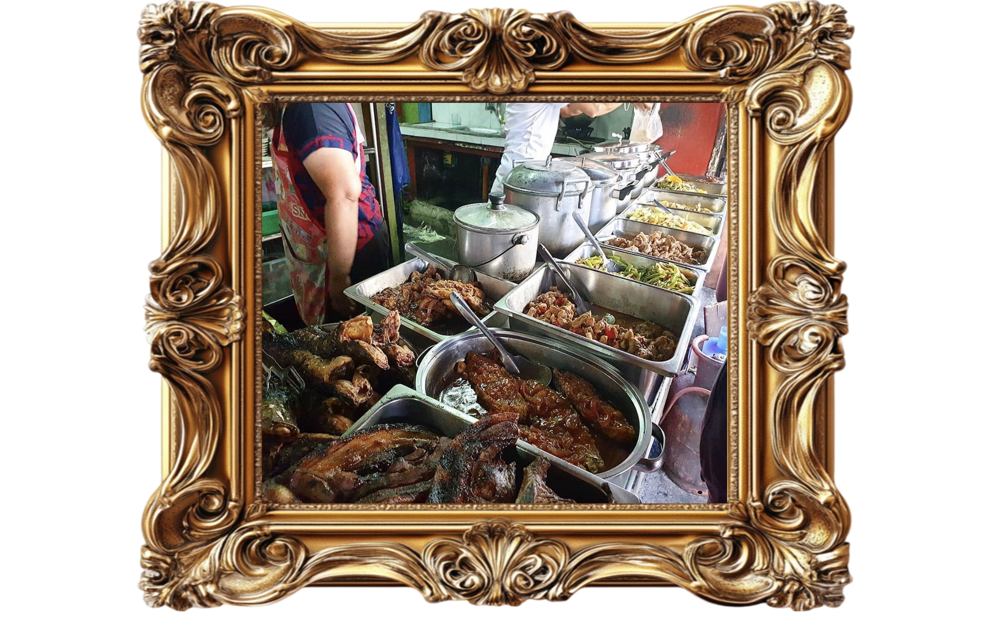

01Why this project?
The dishes of Northern Luzon were always there, served not only in our homes but also in small businesses such as karinderyas. We got curious about these dishes we always see everywhere and wanted to share what we have learned and gathered.
Food is art, so we treat it like art. That's where our idea of museum art like design comes to life. We may have placed only a few to showcase but there are tons of variety of dishes that is more to be appreciated.
